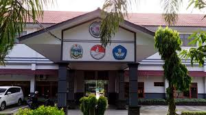

Personal
Halo! Saya Hansen Siregar, seorang pelajar yang penuh semangat dan selalu ingin belajar. Saat ini, saya sedang menempuh pendidikan di SMKN 9 MEDAN dan mengejar impian saya di bidang IT.
Saya percaya bahwa setiap pengalaman adalah pelajaran. Dalam setiap tantangan, saya menemukan peluang untuk tumbuh dan belajar. Di luar pelajaran, saya menikmati olahraga, yang membantu saya menjaga keseimbangan dalam hidup.
Pendidikan
Pendidikan Formal
- SDN 066043 MEDAN
- SMPN 18 MEDAN
- SMKN 9 MEDAN
Pengalaman

Bergabung dengan jurusan Rekayasa Perangkat Lunak (RPL) di SMK adalah pilihan yang sangat memotivasi saya untuk lebih dalam mengeksplorasi dunia teknologi dan perangkat lunak. Di jurusan ini, saya belajar bagaimana mengembangkan aplikasi, baik untuk desktop maupun berbasis web, serta mendalami berbagai teknologi dan bahasa pemrograman yang sangat relevan di dunia kerja.
Pada awalnya, belajar bahasa pemrograman seperti Java, CSS, dan HTML terasa cukup menantang. Namun, dengan bimbingan dari para guru yang berkompeten di bidangnya, saya mulai menguasai dasar-dasar pemrograman, seperti konsep variabel, fungsi, struktur data, dan algoritma. Seiring waktu, saya semakin terampil dalam membuat kode yang bersih dan efisien, serta menghindari bug yang sering kali muncul selama proses pembuatan aplikasi.
Selain teori di kelas, kami banyak melakukan praktikum langsung yang melibatkan pembuatan aplikasi. Salah satu pengalaman yang paling berkesan adalah saat kami diminta untuk membuat aplikasi sistem informasi menggunakan database MySQL dan framework seperti Laravel untuk aplikasi berbasis web. Kami dibimbing untuk mengikuti langkah-langkah dalam mengumpulkan kebutuhan sistem, merancang database, membuat antarmuka pengguna (UI), dan akhirnya menguji aplikasi yang sudah dibuat.
Proses ini memberikan saya pemahaman yang mendalam tentang siklus pengembangan perangkat lunak, dari tahap analisis, perancangan, pengkodean, hingga pengujian.